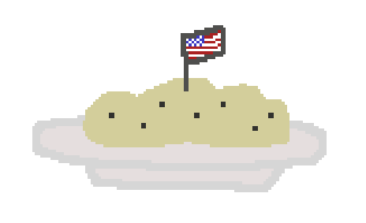

Mashed Potatoes

Description
Completely normal mashed potatoes. Nothing odd about them at all.
Ingredients
- Potatoes
- Milk
- Salt
- Pepper
Steps
- Clean, peel, and chop the potatoes into large chunks.
- Prepare a pot of water. Put the potato chunks inside and bring the pot to a boil.
- Simmer the potatoes until they are fork tender.
- Strain the potatoes and return them to the pot.
- Add salt and pepper. Microwave some milk.
- Mash the potatoes with a potato masher and gradually add the milk, mixing it in.
Continue to mix until a creamy consistency is achieved.
- Serve. Cover the pot with a lid to keep the mashed potatoes warm.